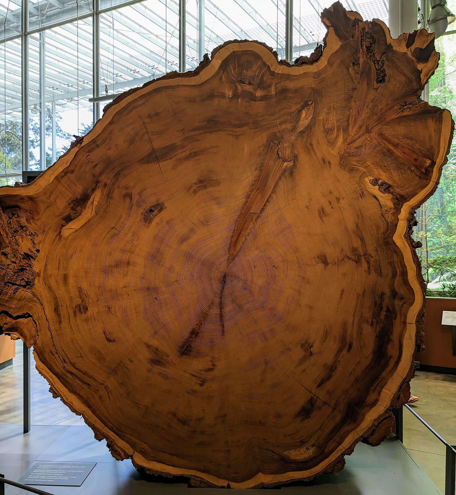

AI 开源项目，每天长多少
每天按 UTC 给收录范围内的仓库拍一次快照，用相邻的快照相减算出增长。范围是命中 AI 相关 topic 的公开仓库，不含 fork 和已归档仓库，不代表整个 GitHub。
这一版榜单的数据日期是 （UTC）。
还没有一次完整成功的采集，所以暂时没有数据日期。


榜单没有取回来
可能是网络中断，或者服务暂时不可用。你选的筛选条件还在，重试一次就好。
站点刚长出新的一圈
榜单随新版本更新了。为了不把两个版本的数据混在一起，旧结果已经清掉，刷新一下就能看到最新的榜单。

编辑精选
这三个是我手挑的，单独放在这里，不占也不改变下面的自然排名。
自然榜单
没有符合条件的结果。换一个语言、Topic 或分类，或者把筛选全部清掉。
| 排名 | 仓库 | 语言 | 近 7 天 Stars | 近 7 天 Forks | Stars 总数 | 最近更新 |
|---|

1937 年的一段西黄松切面：好年份长得宽，坏年份长得窄，都留在木头里。
增长怎么算
增长就是两次快照相减。近 7 天，是今天的快照减去七天前的那一次；近 30 天同理。
Stars 变少了，就照实写成负数，比如 −12。年轮有窄的一圈，榜单也不替它遮掩。
缺了任意一天的快照，就写「数据不足」，并排在最后，不当成 0。
某一天只采集成功了一部分，那一批不会上线，榜单继续显示上一次完整的结果。